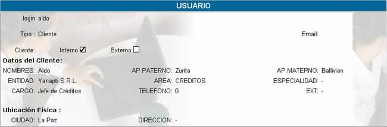

VER DATOS
La opción Ver Datos le presenta todos los
datos registrados a su nombre.

login; hace
referencia al nickname, con el cual usted está
registrado en el sistema
Tipo; indica cliente, debido a que usted se encuentra en esta clasificación,
y en la parte inferior se aclara que es un cliente externo o interno.
Nombres, Ap.
Paterno, Ap. Materno; hacen referencia a su primer, segundo nombre y
apellidos con los que usted fue registrado.
Entidad; hace referencia a la entidad a la cual usted
pertenece.
Área; hace referencia a la descripción del área donde usted trabajo.
Especialidad; especifica la especialidad que usted tiene dentro de
la empresa.
Cargo; hace referencia al nombre del cargo que usted desempeña en su empresa.
Teléfono, ext; especifica el teléfono y la extensión que usted dió en el momento de su registro.
Ciudad y Dirección; son datos registrados en el sistema que especifican
su ubicación física.
Todos estos campos pueden ser modificados
solamente por el administrador.
Problemas.
Las preguntas frecuentes que se hacen
respecto a esta opción son:
¿Cómo puedo cambiar los datos de mi
cuenta?
Usted puede cambiar los datos de su cuenta,
solicitando al administrador la modificación de los datos de registro de
cuenta.